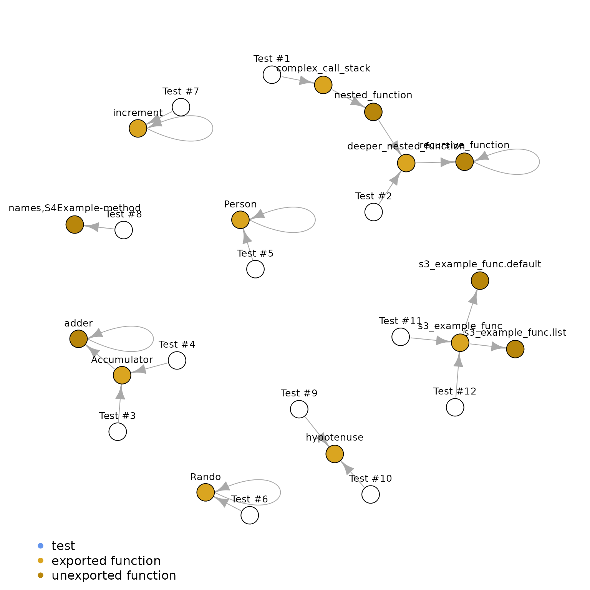

Setup
As with all covtracer analysis, we need to start by collecting coverage traces of a package. Below is an example where a package is installed with the necessary flags such that the coverage traces can be collected.
options(keep.source = TRUE, keep.source.pkg = TRUE, covr.record_tests = TRUE)
examplepkg_source_path <- system.file("examplepkg", package = "covtracer")
remotes::install_local(
examplepkg_source_path,
quiet = TRUE,
force = TRUE,
INSTALL_opts = c("--with-keep.source", "--install-tests")
)
examplepkg_cov <- covr::package_coverage(examplepkg_source_path)
examplepkg_ns <- getNamespace("examplepkg")
ttdf <- covtracer::test_trace_df(examplepkg_cov, aggregate_by = NULL)As well, for this analysis we will use a few supporting packages.
library(dplyr)
#>
#> Attaching package: 'dplyr'
#> The following objects are masked from 'package:stats':
#>
#> filter, lag
#> The following objects are masked from 'package:base':
#>
#> intersect, setdiff, setequal, union
library(igraph)
#>
#> Attaching package: 'igraph'
#> The following objects are masked from 'package:dplyr':
#>
#> as_data_frame, groups, union
#> The following objects are masked from 'package:stats':
#>
#> decompose, spectrum
#> The following object is masked from 'package:base':
#>
#> unionPreparing Graph Data
Before we use the test data, we will clean our incoming data, removing untested records and filtering out untestable objects like S4 class definitions.
ttdf <- ttdf %>%
filter(!is.na(test_name)) %>%
filter(is.na(doctype) | !doctype %in% "class") %>%
select(test_name, alias, is_exported, i) %>%
arrange(test_name, i) %>%
mutate(test_id = cumsum(!duplicated(test_name)))
head(ttdf)
#> test_name alias is_exported i test_id
#> 1 Calling a deeply nested series of functions. complex_call_stack TRUE 1 1
#> 2 Calling a deeply nested series of functions. nested_function FALSE 2 1
#> 3 Calling a deeply nested series of functions. deeper_nested_function TRUE 3 1
#> 4 Calling a deeply nested series of functions. recursive_function FALSE 4 1
#> 5 Calling a deeply nested series of functions. recursive_function FALSE 5 1
#> 6 Calling a deeply nested series of functions. recursive_function FALSE 6 1Create Edges of Our Test Path
Our test-trace dataframe has an index of test expressions, each linked to the traces that they evaluate, with added order of evaluation, i. To prepare this for visualization, we want to convert this to a dataframe where each record describes a step of this process. Instead of a test linking to a trace with an index, each jump in the test path should link from the calling expression to the evaluated expression.
edges_df <- ttdf %>%
split(.$test_name) %>%
lapply(function(sdf) {
unique(data.frame(
from = c(sdf$test_name[[1L]], head(sdf$alias, -1L)),
to = sdf$alias
))
}) %>%
bind_rows() %>%
distinct()
head(edges_df)
#> from to
#> 1 Calling a deeply nested series of functions. complex_call_stack
#> 2 complex_call_stack nested_function
#> 3 nested_function deeper_nested_function
#> 4 deeper_nested_function recursive_function
#> 5 recursive_function recursive_function
#> 6 Calling a function halfway through call stack. deeper_nested_functionLikewise, we want to capture some metadata about each vertex. Since a vertex in this context can be either a test or a trace, we have some data that is captured differently for each class of vertex.
test_names <- Filter(Negate(is.na), unique(ttdf$test_name))
obj_names <- Filter(Negate(is.na), unique(ttdf$alias))
test_vertices <- data.frame(
name = test_names,
color = "cornflowerblue",
label = sprintf("Test #%d", seq_along(test_names)),
test_id = seq_along(test_names),
is_test = TRUE,
is_exported = NA
)
obj_vertices <- data.frame(
name = obj_names,
color = "darkgoldenrod",
label = obj_names,
test_id = NA,
is_test = FALSE,
is_exported = ttdf$is_exported[match(obj_names, ttdf$alias)]
)
vertices_df <- bind_rows(test_vertices, obj_vertices) %>%
mutate(color = ifelse(is_exported, "goldenrod", color))
vertices_df %>%
select(name, label) %>%
head()
#> name label
#> 1 Calling a deeply nested series of functions. Test #1
#> 2 Calling a function halfway through call stack. Test #2
#> 3 Example R6 Accumulator class constructor is traced Test #3
#> 4 Example R6 Accumulator class methods are traced Test #4
#> 5 Example R6 Person class public methods are traced Test #5
#> 6 Example R6 Rando class active field functions are traced Test #6Plotting Our Test Paths
Finally, we can plot this network of test executions,
g <- igraph::graph_from_data_frame(edges_df, vertices = vertices_df)
par(mai = rep(0, 4), omi = rep(0, 4L))
plot.igraph(g,
vertex.size = 8,
vertex.label = V(g)$label,
vertex.color = V(g)$color,
vertex.label.family = "sans",
vertex.label.color = "black",
vertex.label.dist = 1,
vertex.label.degree = - pi / 2,
vertex.label.cex = 0.8,
mark.border = NA,
margin = c(0, 0.2, 0, 0.2)
)
legend(
"bottomleft",
inset = c(0.05, 0),
legend = c("test", "exported function", "unexported function"),
col = c("cornflowerblue", "goldenrod", "darkgoldenrod"),
pch = 16,
bty = "n"
)
Naturally, there are a plethora of wonderful visualization packages available that accept igraph data as input. This graph could just as well be plotted with the visNetwork package, though it is omitted to keep this example analysis minimal.